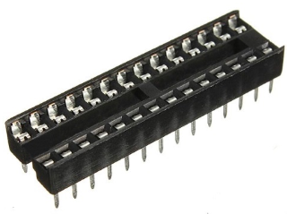

Placa Gravadora para ATMEGA328P/8L e ATTINY85
Postado em 24 de Fevereiro, 2020
Problema
Recentemente eu fiz uma placa para controlar um motor de passo com um display e alguns botões, e para isso decidi utilizar um ATMEGA328P devido a grande utilização de memória pelas bibliotecas e pela quantidade de portas que precisaria utilizar. Como a placa era para um uso bem específico, não precisaria ter pinos de programação expostos (fossem ICSP ou padrão FTDI), mas os testes que realizei em bancada só me permitiram testar os acionamentos e os testes de torque e velocidade do acionamento do motor só poderiam ser realizados na placa, já com todas as peças montadas.
A configuração ideal de velocidade do motor demorou demais para ser encontrada, tendo sido necessário retirar o microcontrolador da placa para um Arduino e de volta diversas vezes, ao custo de danificar algum pino ou mesmo o soquete estampado de 28 pinos. Então desde esse dia que eu imaginei a criação da placa shield deste post, para que eu pudesse programar qualquer microcontrolador que eu geralmente uso (podendo ser um ATMEGA328P, ou um ATMEGA8L ou um ATTINY85), sem a necessidade de fazer a ligação dos fios em uma protoboard e sem correr o risco de danificar algo no processo.
 Soquete estampado DIP de 28 pinos. Fonte: FilipeFlop
Criando a placa no EAGLE
Para fazer a placa no EAGLE eu utilizei o esquemático do Arduino Uno R3 criado pela Adafruit (link para a biblioteca aqui), planejei as conexões necessárias para fazer a programação via ICSP tanto dos ATMEGAs quanto do ATTINY. Expus também as conexões com um cristal, para gravar já na frequência que desejaria utilizar. Adicionei um LED ao pino digital 13 para uma visualização do processo de gravação.
Já o soquete ZIF (zero insertion force) compatível com o que eu tinha veio da biblioteca SparkFun-Connectors, feito pela SparkFun.
 Esquemático da placa Arduino, com soquete para o cristal
Esquemático da placa Arduino, com soquete para o cristal
Placa pronta
Submeti os arquivos EAGLE para fazer no ProtoLab, o laboratório de prototipagem rápida onde fui bolsista. Entreguei a placa de fibra de face dupla e soldei.
 A placa finalizada, com um ATMEGA328P e um cristal de 16MHz
A placa finalizada, com um ATMEGA328P e um cristal de 16MHz
 A placa com um ATTINY85
A placa com um ATTINY85
{kind=link}
{kind=link}
{kind=link}
Download
Para baixar os arquivos EAGLE, aqui está um link para o meu repositório do GitHub do projeto.